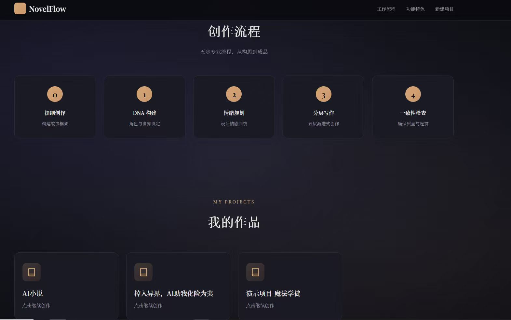

本项目的写作技术技巧来源于 熊叔的茅草屋@xionghuanwei 的创作方法论，感谢作者在 AI 写作领域的探索与分享，为本项目提供了宝贵的理论基础。本项目仅用于个人研究。
AI 小说创作工作流系统通过 DNA 档案 + 情绪节拍 + 分层写作三大核心方法论， 结合 Claude AI 的强大能力，帮助创作者系统化、专业化地完成高质量小说作品。 轻量级本地部署，数据完全本地掌控，支持自定义创作流程和技能模块。
为小说构建完整的"基因档案"，确保世界观、角色、风格的统一性，避免前后矛盾
为整部小说和每个章节规划情绪曲线，精准控制读者的情绪体验，张弛有度
骨架层→情绪层→DNA 激活层→技巧优化层→风格统一层，分步打磨章节质量
8 大专业技能覆盖创作全流程，世界观构建师、角色设计师、情绪节拍规划师等
可视化项目管理界面，无需命令行操作，响应式设计，移动端友好
6 个维度自动检查章节质量，角色一致性、世界观一致、伏笔完整性等

物理法则、社会潜规则、语言 DNA、环境 DNA、经济 DNA
外貌特征、性格特质、行为模式、说话方式、背景故事
关系类型、互动规则、冲突点、发展轨迹
禁止清单、描写规则、对话规则、节奏规则
搭建场景基本框架，只写基本动作，像分镜脚本一样简洁
基于骨架叠加情绪，通过描写传达目标情绪，只做加法
让角色行为符合 DNA 设定，激活说话方式、行为习惯、性格特质
运用写作技巧提升质量，优化对话、环境描写、心理活动、节奏控制
输出最终版本，检查禁止词汇、视角一致、叙述声音，publish-ready
世界观构建师，创建世界设定、物理法则、社会规则
角色设计师，设计角色档案、性格特质、背景故事
情节规划师，设计故事结构、章节大纲、情节转折
情绪节拍规划师，规划情绪曲线、章节情绪目标
DNA 构建器，生成完整的 DNA 档案系统
分层作家，执行 5 层分层写作流程
一致性检查器，检查角色一致、世界观一致、伏笔完整
小说作家，综合技能，完成完整小说创作
填写项目信息
生成 DNA 档案
规划情绪曲线
5 层分层法
质量检查
publish-ready
Python 核心模块
SKILL 技能文件
HTML 模板
Markdown 文档